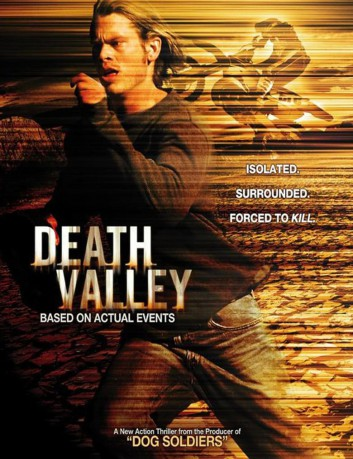

#11351 Death Valley - Die Jagd hat begonnen
Alternativ: Death Valley (Englischer Titel) Mojave
 
 IMDB-Wertung: 5.7 / 10
IMDB-Wertung: 5.7 / 10  Metascore: 0
Metascore: 0 
Josh (Eric Christian Olsen) fährt mit drei seiner besten Freunde zu einem nächtlichen Techno-Rave mitten in der kalifornischen Wüste. Am Morgen danach fallen die übernächtigten Partygänger in die Hände der völlig durchgeknallten einheimischen Bikergang des Psychopathen Dom (Dash Mihok). Als einer der Gangmitglieder erschossen wird, beginnen Dom und seine Männer eine gnadenlose Jagd auf die Großstadt-Jungs quer durch das Death Valley...
Jahr: 2004
Dauer: 82 Minuten
FSK:
Land: USA Studio: Allumination FilmworksTonspuren:
Untertitel:
Auflösung: 1080p (1920x1080) Größe: 5058 MB
Genre: Action, Thriller, Drama
Regisseur: David Kebo, Rudi Liden
Drehbuch: David Kebo, Rudi Liden
Soundtrack: Nathan Barr
Darsteller:
 Eric Christian Olsen als
Eric Christian Olsen als  Dash Mihok als
Dash Mihok als - Rider Strong als
- Vince Vieluf als
 Bumper Robinson als
Bumper Robinson als - Genevieve Padalecki als
- Wayne Young als
 Brendan Fletcher als
Brendan Fletcher als - Stanton Barrett als
- Kevin Indio Copeland als
- Diva als
- Roxanne V. Hennig als
 Christopher Maleki als
Christopher Maleki als - Joe Peracchio als
- Natalie Denise Sperl als
- Stephen Eiland als
- Aaron Rhames als
- Chance Romero als
- Julian Ansell als
- Amber LeRae Earls als
- Brenda Galaz-Magyar als
- Everett Ottinger als
- Julian Wolf als
- Richard Barela als
- Kristi Kountz als
- Tavia Schwartz als
Datei: X:\2004(A-F)\Death Valley - Die Jagd hat begonnen (2004, FSK, 1920x1080).mkv seit 24.06.2019
Festplatte: HD 2003-2004-2005(A-F)
 Es gibt insgesamt 39 Filme in der Gruppe '2004(A-F)'
Es gibt insgesamt 39 Filme in der Gruppe '2004(A-F)'